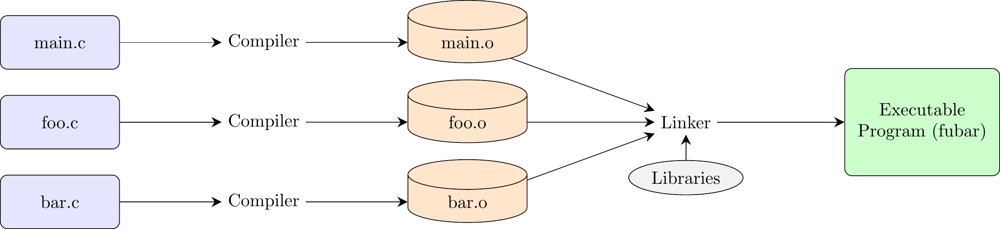
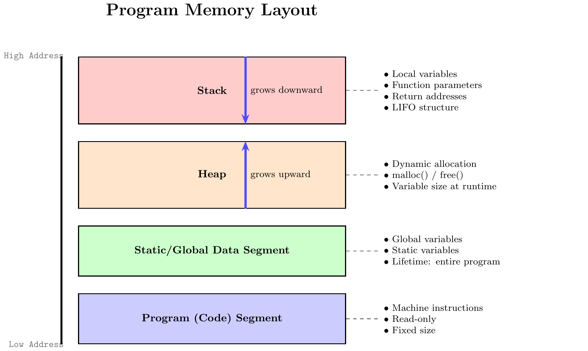

W1. Compilation and Memory Management in C
1. Summary
1.1 The C Programming Language
The C programming language, developed by Dennis Ritchie and Brian Kernighan, is a foundational, general-purpose language celebrated for its efficiency and low-level control over system hardware. It is considered a middle-level language, bridging the gap between high-level languages that provide significant abstraction and low-level assembly languages that map directly to machine instructions. This unique position has earned it the nickname “universal assembly language.”
A crucial concept in learning any language is the difference between syntax and semantics.
- Syntax refers to the set of rules that govern the structure and spelling of statements. For example, the rule that a statement must end with a semicolon is syntax.
- Semantics refers to the meaning of those statements—what the computer is instructed to do. While correct syntax is necessary for a program to compile, a deep understanding of semantics is essential for writing correct and efficient programs.
Key characteristics of C include:
- Compiled Language: C source code must be translated by a compiler into machine code before it can be run.
- Statically Typed: Every variable has a specific data type (e.g.,
int,float) that is determined at compile time. However, C is not strongly typed, as it permits many kinds of type conversions. - Procedural: Programs in C are built from procedures, also known as functions, which are blocks of code that perform specific tasks.
- System-Level Access: C allows for direct memory manipulation, giving the programmer the power to “exploit underlying features of the architecture.”
- Unsafe by Design: C trusts the programmer. It does not have built-in protections against common errors like accessing invalid memory locations. This “absence of restrictions” provides great power but also requires careful programming to avoid bugs and security flaws. It’s a best practice to always test code on your own machine to see how it behaves in a real environment.
1.2 Essential Tools & The Compiler
To program in C, you only need two core tools: a text editor to write source code (e.g., VS Code, Notepad++) and a C compiler. An Integrated Development Environment (IDE) is a convenient package that bundles these tools with a debugger and other features, but it is not a requirement.
The most widely used C compiler is GCC (GNU Compiler Collection). Other common compilers include Clang and Microsoft Visual C++ (MSVC). To compile a program from a source file named program.c into an executable named program, you would use the following command in a terminal: gcc -Wall -o program program.c
gcc: Invokes the compiler.-Wall: A critical flag that enables all compiler warnings. Heeding these warnings helps catch potential bugs.-o program: Specifies the name of the output (executable) file.program.c: The input source file.
1.3 The Compilation and Linking Process
A C program can be made of multiple source files (.c files), each known as a translation unit after being processed. Creating an executable from these files involves a multi-stage process:
- Preprocessing: The preprocessor scans the source code for directives (lines beginning with
#). For instance,#include <stdio.h>copies the entire contents of the standard input/output header file into your source file. - Compilation: The compiler translates the preprocessed code into assembly language, a human-readable representation of machine instructions.
- Assembly: The assembler converts the assembly code into pure machine code, creating an object file (with a
.oor.objextension). This file contains the code for its translation unit but is not yet runnable. - Linking: The linker combines all object files into a single executable file. It resolves references between files (e.g., a function call in
main.cto a function defined inutils.c) and incorporates necessary code from system libraries.
1.4 Program Structure and Memory Model
A running C program’s memory is organized into several distinct segments:
- Code Segment: Contains the program’s machine instructions. This area is typically read-only.
- Static/Global Data Segment: Stores global and static variables, which exist for the program’s entire duration.
- Heap: A region for dynamic memory allocation. Data can be allocated on the heap at runtime (e.g., using
malloc()) and must be manually deallocated (usingfree()). The heap grows upwards toward higher memory addresses. - Stack: Manages function calls using a Last-In, First-Out (LIFO) structure. When a function is called, a stack frame is pushed onto the stack. This frame holds the function’s parameters, return address, and local variables. When the function finishes, its frame is popped off. The stack grows downwards toward lower memory addresses.

1.5 Variables, Types, Scope, and Storage Classes
A variable is a named location in memory. More formally, a type defines a set of possible values a variable can hold, a set of operators that can be applied to it, and its relationships with other types.
The scope of a variable determines where in the code it is visible. C uses lexical scope, primarily defined by blocks (code enclosed in {}). A variable declared in an inner block can hide or shadow a variable with the same name from an outer block.
Storage classes are keywords that define a variable’s lifetime (how long it exists) and linkage (its visibility across different files).
auto: The default for local variables. They have a local lifetime (created and destroyed with their block) and are stored on the stack.static:- Local Static Variable: Has a static lifetime (exists for the whole program) but local scope (only visible inside its function). It is initialized only once and retains its value between function calls.
- Global Static Variable: Has a static lifetime and internal linkage, meaning it is only visible within the single file where it is declared.
extern: A declaration that tells the compiler a global variable exists but is defined in another file. It is used to share variables across translation units. A standard global variable (withoutstatic) has external linkage by default.
1.6 Debugging
A debugger is a tool that allows you to run a program in a controlled manner to find and fix errors (bugs). It lets you pause execution, inspect the values of variables, and step through the code line by line. GDB (the GNU Debugger) is a powerful, command-line debugger for C.
To prepare a program for debugging, you must compile it with the -g flag, which includes debugging information in the executable: gcc -g -Wall -o program program.c
Common GDB commands include:
run(orr): Starts running your program.break <line_number>(orb): Sets a breakpoint, which pauses execution when it reaches that line.next(orn): Executes the current line and moves to the next line in the same function. It steps over function calls.step(ors): Executes the current line. If the line contains a function call, it steps into that function.print <variable>(orp): Displays the current value of a variable.continue(orc): Resumes execution until the next breakpoint or the end of the program.quit(orq): Exits GDB.
2. Definitions
- Compiler: A program that translates source code from a high-level language into low-level machine code.
- Linker: A program that combines object files and libraries into a single executable file.
- Debugger: A tool used to execute a program in a controlled way to find and diagnose errors.
- Source File: A text file (
.c) containing human-readable programming instructions. - Object File: A file (
.o) containing machine code from a single source file; it is an intermediate step before linking. - Executable File: A file containing a complete machine code program that can be run by the operating system.
- Translation Unit: A source file after the preprocessor has processed it; the basic unit of compilation.
- Stack: A LIFO memory region for function calls, storing local variables, parameters, and return addresses.
- Stack Frame: A block of memory on the stack created for a single function call.
- Heap: A memory region for dynamic allocation, managed manually by the programmer.
- Syntax vs. Semantics: Syntax is the grammatical structure of code; Semantics is its meaning and behavior.
- Scope: The region of code where a variable is visible and accessible.
- Lifetime: The duration for which a variable exists in memory.
- Linkage: The extent to which a variable or function can be shared across different files (translation units).
3. Examples
3.1. Hello World Program (Lab 1, Task 1)
Write a C program to print “Hello, World!”.
Click to see the solution
// Include the Standard Input/Output library, which is necessary for functions like printf.
#include <stdio.h>
// The main function is the entry point of every C program.
int main() {
/* my first program in C */
// printf is a function that prints formatted output to the screen.
// "Hello, World!" is the string to be printed.
// "\n" is a special character that represents a new line.
printf("Hello, World! \n");
// The return 0 statement indicates that the program has executed successfully.
return 0;
}3.2. Integer Arithmetic (Lab 1, Task 2)
Write a program which declares/initializes 2 integer variables and prints the result of their addition, subtraction, multiplication and division.
Click to see the solution
// Include the Standard Input/Output library for using the printf function.
#include <stdio.h>
// The main function where the program execution begins.
int main() {
// Declare and initialize two integer variables.
// You can change these values to see different results.
int x = 20;
int y = 5;
// --- Perform Arithmetic Operations ---
// 1. Addition
// Calculate the sum of x and y and store it in a new integer variable 'sum'.
int sum = x + y;
// Print the result of the addition. The '%d' is a format specifier for integers.
printf("Addition: %d + %d = %d\n", x, y, sum);
// 2. Subtraction
// Calculate the difference between x and y and store it in 'difference'.
int difference = x - y;
// Print the result of the subtraction.
printf("Subtraction: %d - %d = %d\n", x, y, difference);
// 3. Multiplication
// Calculate the product of x and y and store it in 'product'.
int product = x * y;
// Print the result of the multiplication.
printf("Multiplication: %d * %d = %d\n", x, y, product);
// 4. Division
// Note: If both operands are integers, C performs integer division (the fractional part is discarded).
int integer_division = x / y;
// Print the result of the integer division.
printf("Integer Division: %d / %d = %d\n", x, y, integer_division);
// To get a precise result for division, we can convert the integers to floating-point numbers.
// (float)x is a 'cast' that temporarily treats the integer x as a float for this calculation.
float float_division = (float)x / (float)y;
// Print the result of the floating-point division. The '%f' is a format specifier for floats.
printf("Floating-Point Division: %d / %d = %f\n", x, y, float_division);
// Indicate that the program finished successfully.
return 0;
}